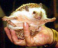
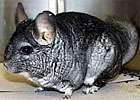
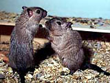
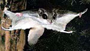
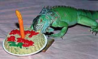

В наше время зачастую вместо обычных кошек и собак дома заводят экзотических животных. Как и люди, они могут быть переносчиками бактерий и грибков, некоторые из которых способны вызывать серьезные заболевания и даже быть смертельно опасными.
В наше время зачастую вместо обычных кошек и собак дома заводят экзотических животных. В Америке, например, все более популярными домашними питомцами становятся ежи, шиншиллы, белки летяги, игуаны, а также попугаи ара и какаду.
По словам доктора медицинских наук, профессора дерматологии Baylor School of Medicine (Хьюстон) Theodor Rosen, эти милые и безобидные животные могут принести с собой в дом «непрошеных гостей». Как и люди, они могут быть переносчиками бактерий и грибков, некоторые из которых способны вызывать серьезные заболевания и даже быть смертельно опасными. Например, какаду и попугаи ара могут переносить Cryptococcus neoformans - возможный источник инфекции у ВИЧ-инфицированных.
Ежи - еще один потенциальный источник инфекции. По подсчетам Американской ветеринарной ассоциации, в домах американцев живет около 40000 африканских карликовых ежей - самого популярного вида этих животных. Известно, что эти маленькие, но не всегда дружелюбные существа переносят на своих иглах и животиках разновидность Trychophyton mentagrophytes, который вызывает грибковые поражения кожи, наблюдавшиеся у владельцев таких животных.
Шиншиллы, хотя и не относятся к отряду насекомоядных, также переносят T.mentagrophytes. Кроме того, как и все грызуны, шиншиллы могут переносить микроорганизмы семейства Aspergillus, особенно Aspergillus niger. В обычных условиях этот микроорганизм не вызывает заболевания у людей, но может стать причиной болезни у пациентов с имуннодефицитом.
Песчанки, также относящиеся к отряду грызунов, иногда подвержены стафилококковому дерматиту, вызванному Staphylococcus aureus, поэтому людям, имеющим кожные заболевания, не рекомендуется держать этих животных дома. К тому же в Азии и на Ближнем Востоке песчанки являются основным резервуаром микроорганизмов рода Leishmania и могут переносить простейшие рода Giardia. Также известны случаи переноса ими птичьего клеща, полученного при контактах с птицами в зоомагазинах. Такой клещ может вызывать появление красной папулезной сыпи, сопровождающейся зудом.
Еще одно экзотическое животное, которое иногда заводят в американских семьях, - это летяга. Два самых популярных вида - это белка-летяга и карликовая сумчатая летяга. Эти способные планировать на расстояние до 50 метров животные могут при этом переносить микроорганизмы Rickettsia prowazecki, вызывающие тиф, а также необычные разновидности стафилококков, которые были связаны со случаями стафилококкового сепсиса, нелегко поддающегося лечению. Карликовые сумчатые летяги могут переносить микроорганизмы рода Salmonella и другие патогенные микроорганизмы, некоторые из которых представляют угрозу для человека.
Игуаны - также довольно популярные в США домашние любимцы. По данным Американской ветеринарной ассоциации в домах американцев живут около 700000 игуан. Их существует 13 видов, но наибольшей популярностью пользуется мексиканская игуана, которая может достигать почти двух метров в длину и весить 90 кг. Игуаны могут быть переносчиками сальмонелл. Они также могут переносить Serratia marcescens, который после укуса игуаны может стать причиной целлюлита.
Однако экзотические животные могут не только переносить возбудителей опасных заболеваний. По словам Rosen, в медицинской литературе описан, по крайней мере, один случай, когда у пациента развилась аллергия на чешую игуаны.
Таким образом, прежде чем покупать необычного зверька, стоит, возможно, поинтересоваться у специалиста, что наряду с морем положительных эмоций он может принести в дом.
Infectious Diseases in Children, 2002; April: 83